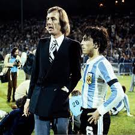

Maradona

Menotti
Lionel Andrés Messi Cuccittini, conocido como Leo Messi, es un futbolista argentino que juega como delantero o centrocampista. Jugador histórico del Fútbol Club Barcelona.
Cristiano Ronaldo dos Santos Aveiro (pronunciación en portugués: /kɾiʃˈtiɐnu ʁuˈnaɫdu/; Funchal, Madeira; 5 de febrero de 1985), conocido como Cristiano Ronaldo, es un futbolista portugués que juega como delantero o extremo.

Neymar da Silva Santos Júnior (pronunciación en portugués: /nejˈmaʁ dɐ ˈsiwvɐ ˈsɐ̃tus ˈʒũɲoʁ/; Mogi das Cruzes, São Paulo; 5 de febrero de 1992), conocido como Neymar Júnior o simplemente Neymar.
Estadio Ras Abu
Estadio Al Bayt
Estadio Iribarren